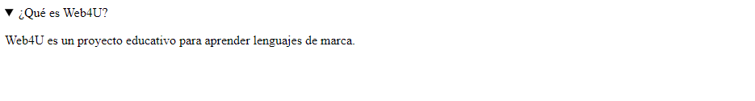
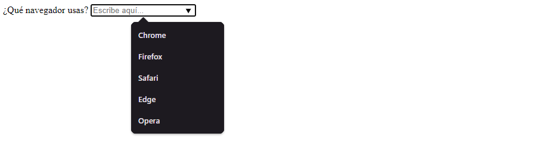
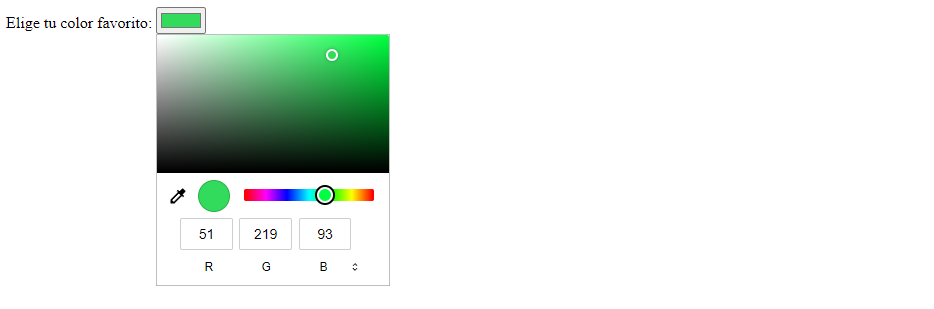

5 Etiquetas HTML Interesantes
1. La etiqueta <details> y <summary>
Caso de Uso:
Se utiliza para crear un widget interactivo que el usuario puede desplegar o contraer. Es ideal para secciones de preguntas frecuentes (FAQ) para ahorrar espacio.
Ejemplo de Código:
<details>
<summary>¿Qué es Web4U? (Haz clic)</summary>
<p>Web4U es un proyecto educativo para aprender lenguajes de marca con ejemplos prácticos.</p>
</details>
Resultado en el Navegador:

Más información:
W3C: Elemento details
2. La etiqueta <dialog>
Caso de Uso:
Representa una parte de la aplicación con la que el usuario interactúa para realizar una tarea, como un cuadro de diálogo o una ventana modal nativa.
Ejemplo de Código:
<!-- Se suele usar JS para abrirlo con .showModal(), pero este es el HTML base -->
<dialog open>
<p>¡Hola! Soy una ventana modal nativa de HTML.</p>
<form method="dialog">
<button>Cerrar</button>
</form>
</dialog>
Resultado en el Navegador:
Más información:
W3C: Elemento dialog
3. La etiqueta <datalist> (Autocompletado)
Caso de Uso:
Proporciona una función de "autocompletado" en los elementos input. Los usuarios ven una lista desplegable de sugerencias pero pueden escribir libremente.
Ejemplo de Código:
<label for="navegador">¿Qué navegador usas?</label>
<input list="navegadores" name="navegador" id="navegador" placeholder="Escribe aquí...">
<datalist id="navegadores">
<option value="Chrome">
<option value="Firefox">
<option value="Safari">
<option value="Edge">
<option value="Opera">
</datalist>
Resultado en el Navegador:

Más información:
W3C: Elemento datalist
4. El input tipo "color" (<input type="color">)
Caso de Uso:
Proporciona una interfaz de usuario nativa (un selector de color o "color picker") para elegir un color hexadecimal en un formulario.
Ejemplo de Código:
<form>
<label for="color-favorito">Elige tu color favorito:</label>
<input type="color" id="color-favorito" name="color-favorito" value="#3498db">
</form>
Resultado en el Navegador:

Más información:
W3C: Input type color
5. La etiqueta <meter>
Caso de Uso:
Se usa para representar un valor numérico dentro de un rango conocido, como el uso del disco duro o estadísticas.
Ejemplo de Código:
<p>Uso del almacenamiento:</p>
<meter id="disco" value="0.7" min="0" max="1" low="0.2" high="0.8" optimum="0.1">70%</meter>
<label for="disco">70% ocupado</label>
Resultado en el Navegador:

Más información:
W3C: Elemento meter